Design Details: Posting Date on Adjustment Value Entry
This article provides guidance for users of the Inventory Costing functionality in Business Central. The specific article is providing guidance in how the Adjust Cost - Item Entries batch job identifies and assigns a posting date to the value entries that the batch job is about to create.
First the concept of the process is reviewed, how the batch job identifies and assigns the Posting Date to the Value Entry to be created. Thereafter there are some scenarios shared that we in the support team come across from time to time and finally there is a summary of the concepts used from version 3.0.
The Concept
From version 5.0, the Adjust Cost – Item Entries batch job assigns a posting date to the value entry it is about to create in the following steps:
Initially the Posting Date of the entry to be created is the same date as the entry it adjusts.
The Posting Date is validated against Inventory Periods and/or General Ledger Setup.
Assignment of Posting Date; If the initial Posting Date is not within allowed posting date range the batch job will assign an allowed Posting Date from either General Ledger Setup or Inventory Period. If both Inventory Periods and allowed posting dates in General Ledger Setup are defined, the later date of the two will be assigned to the Adjustment Value Entry.
Let’s review this process more in practice. Assume we have an Item Ledger Entry of Sale. The item was shipped on September 5th, 2013 and it was invoiced the day after.
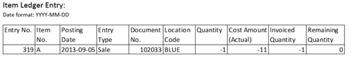
Below, the first Value Entry (379) represents the shipment and carry the same Posting Date as the parent Item ledger Entry.
The second Value Entry (381) represents the invoice.
The third Value Entry (391) is an Adjustment of the invoicing Value Entry (381)
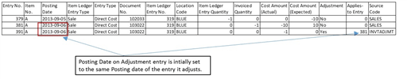
Step 1: Adjustment Value Entry to be created is assigned same Posting Date as the entry it adjusts, illustrated above by Value entry 391.
Step 2: Validation of initial assigned Posting Date.
The Adjust Cost – Item Entries batch job determines if the initial Posting Date of the Adjustment Value Entry is within allowed posting date range based upon Inventory Periods and/or General Ledger Setup.
Let’s review the above mentioned Sale by adding setup of allowed posting date ranges.
Inventory Periods:
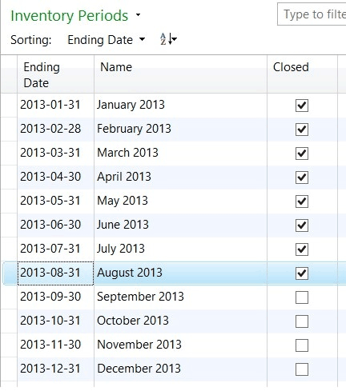
First allowed posting date is the first day in the first open period. September 1st, 2013.
General Ledger Setup:
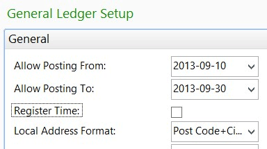
First allowed posting date is the date stated in field Allow Posting From: September 10th, 2013.
If both Inventory Periods and allowed posting dates in General Ledger Setup are defined, the later date of the two will define the allowed posting date range.
Step 3: Assignment of an allowed posting date;
The initial assigned Posting Date was September 6th as illustrated in step 1. However, in the 2nd step the Adjust Cost – Item entries batch job identifies that earliest allowed Posting Date is September 10th and thereby assigns September 10th to the Adjustment Value Entry, below.
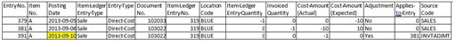
We have now reviewed the concept for assigning Posting Dates to Value Entries created by the Adjust Cost - Item entries batch job.
Let’s continue to review some scenarios that we in the support team comes across from time to time in relation to assigned Posting Dates in the Adjust Cost – Item entries batch job and related setups.
Scenarios
Scenario I: “Posting Date is not within your range of allowed posting dates…”
This is a scenario where a user is experiencing mentioned error message when the Adjust Cost – Item entries batch job is run.
In the previous section, describing the concept of assigning posting dates, the intention of the Adjust Cost – Item entries batch job is to create a Value Entry with Posting Date September 10th.
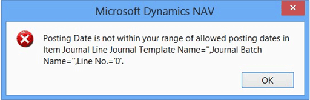
We follow up on the User Setup:
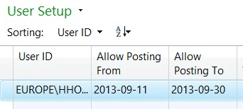
The user in this case has an allowed posting date range from September 11th to September 30th and is thereby not allowed to post the Adjustment Value Entry with Posting Date September 10th.
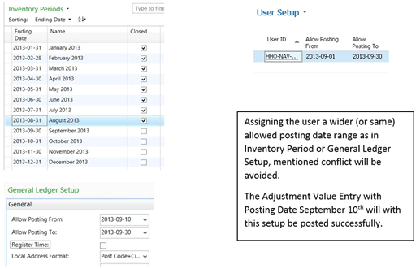
Knowledge Base article 952996 discusses additional scenarios related to mentioned error message.
Scenario II: Posting Date on Adjustment Value Entry versus Posting Date on entry causing the adjustment such as Revaluation or Item charge.
Revaluation scenario:
Prerequisites:
Inventory setup:
Automatic Cost Posting = Yes
Automatic Cost Adjustment=Always
Average Cost Calc. Type=item
Average Cost Period=Day
General Ledger Setup:
Allow Posting From = January 1st, 2014
Allow Posting To = empty
User Setup:
Allow Posting From = December 1st, 2013.
Allow Posting to = empty
To test the scenario
Create item TEST:
Base unit of measure = PCS
Costing Method = Average
Select optional posting groups.
Open Item Journal, create and post a line as follows:
Posting Date = December 15th, 2013
Item = TEST
Entry Type = Purchase
Quantity = 100
Unit Amount = 10
Open Item Journal, create and post a line as follows:
Date = December 20th, 2013
Item = TEST
Entry Type = Negative Adjustment
Quantity = 2
Open Item Journal, create and post a line as follows:
Date = January 15th, 2014
Item = TEST
Entry Type = Negative Adjustment
Quantity = 3
Open Revaluation Journal, create and post a line as follows:
Item = TEST
Applies-to Entry = select Purchase entry posted at step 2. The Posting Date of the revaluation will be the same as the entry it adjusts.
Unit Cost Revalued = 40
The following Item Ledger and Value Entries have been posted:
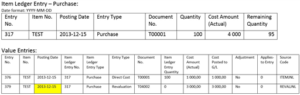
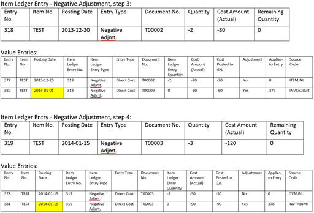
The Adjust Cost – Item entries batch job has recognized a change in cost and adjusted the Negative Adjustments.
Review of Posting Dates on created Adjustment Value Entries: The earliest allowed Posting Date the Adjust Cost - Item Entries batch job has to relate to is January 1st, 2014 as stated in the General Ledger Setup.
Negative Adjustment in step 3: assigned Posting Date is January 1st, provided by General Ledger Setup. The Posting Date of the Value Entry in scope for adjustment is December 20, 2013. According to General Ledger Setup the date is not within allowed posting date range. Therefore the Posting Date stated in the Allow Posting From field in the General Ledger Setup is assigned to the Adjustment Value Entry.
Negative Adjustment in step 4: assigned Posting Date is January 15th. The Value Entry in scope of adjustment has Posting Date January 15th, which is within the allowed posting date range according to General Ledger Setup.
The adjustment made for the Negative Adjustment in step 3 causes discussion. The favorable Posting Date for the Adjustment Value Entry would have been December 20th or at least within December as the revaluation causing the change in COGS was posted in December.
To achieve adjustment in December of the Negative Adjustment in step 3, the General Ledger Setup, Allow Posting From field, need to state a date in December.
Conclusion:
With the experiences from this scenario, considering most suitable setup of allowed posting date range for a company, the following might be useful: As long as changes in inventory value is allowed to be posted in a period, December in this case, the setup the company uses for allowed posting date ranges should be aligned with this decision. The Allow Posting From in the General Ledger Setup, stating December 1st would allow the revaluation made in December to be forwarded to affected outbound entries in the same period.
User groups not allowed to post in December but in January, which was probably intended to be limited by the General Ledger Setup in this scenario, should instead be addressed via the User setup.
Item charge scenario:
Prerequisites:
Inventory setup:
Automatic Cost Posting = Yes
Automatic Cost Adjustment=Always
Average Cost Calc. Type=item
Average Cost Period=Day
General Ledger Setup:
Allow Posting From = December 1st, 2013.
Allow Posting To = empty
User Setup:
Allow Posting From = December 1st, 2013.
Allow Posting to = empty
To test the scenario
Create item charge:
Base unit of measure = PCS
Costing Method = Average
Select optional posting groups.
Create new purchase order
Buy-from Vendor No.: 10000
Posting Date = December 15th, 2013
Vendor Invoice No.: 1234
On the purchase order line:
Item = CHARGE
Quantity = 1
Direct Unit Cost = 100
Post Receive and Invoice.
Create new sales order:
Sell-to Customer No.: 10000
Posting Date = December 16th, 2013
On the sales order line:
Item = CHARGE
Quantity = 1
Unit Price = 135
Post Ship and Invoice.
General Ledger Setup:
Allow Posting From = January 1st, 2014
Allow Posting To = blank
Create new purchase order:
Buy-from Vendor No.: 10000
Posting Date = January 2nd, 2014
Vendor Invoice No.: 2345
On the purchase order line:
Item Charge = JB-FREIGHT
Quantity = 1
Direct Unit Cost = 3
Assign Item Charge to Purchase Receipt from step 2.
Post Receipt and Invoice.
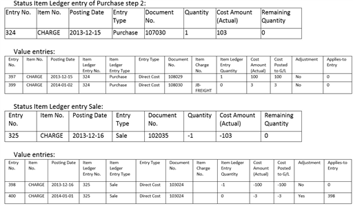
On work date January 3rd a purchase invoice arrives, containing an additional item charge to the purchase made in step 2. This invoice has document date December 30th and is therefore posted with Posting Date December 30th, 2013.
Create new purchase order:
Buy-from Vendor No.: 10000
Posting Date = December 30th, 2013
Vendor Invoice No.: 3456
On the purchase order line:
Item Charge = JB-FREIGHT
Quantity = 1
Direct Unit Cost = 2
Assign Item Charge to Purchase Receipt from step 2
Post Receipt and Invoice.
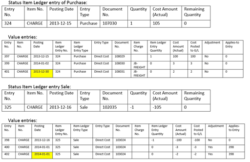
Inventory Valuation report is printed as of Date December 31st , 2013
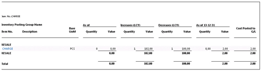
Summary of scenario:
The described scenario ends up with an Inventory Valuation report demonstrating Quantity = 0 while the Value = 2. The Item charge posted in step 11 is part of the Inventory Increase value of December while the Inventory Decrease of the same period is not affected.
Having the General Ledger Setup stating Allow Posting From January 1st was a good thing for the first Item charge. The costs of the Inventory Increase and Decrease was recorded in the same period. For the second Item charge however, the General Ledger Setup causes the change in COGS to be recognized in the period after.
Conclusion:
It’s a challenge to have the Inventory Valuation report to demonstrate Quantity = 0 while the Value <> 0. In this case it’s also more difficult to express the optimal settings, having purchase invoices arriving the same day but addressing different periods or even fiscal years. Crossing to a new fiscal year usually requires some planning and as part of that the insight of Adjust Cost – Item entries process, recognizing COGS, is to be considered.
In this scenario one option could have been to have the General Ledger Setup, field Allow Posting From, stating a date in December for a couple of more days and the posting of the first item charge postponed to allow all costs for the previous period/fiscal year to be recognized for the period they belong to first, having the Adjust Cost – Item entries batch job run and thereafter move the allowed posting date to the new period/fiscal year. The first item charge with posting date January 2nd could then be posted.
History of Adjust Cost – Item entries batch job
Below is a summary of the concept assigning Posting Dates to Adjustment Value Entries by the Adjust Cost – Item entries batch job since version 3.0.
From version 3.0..3.70.A
In the request form of the Adjust Cost - Item Entries batch job there is a Posting Date to be entered by the user. The batch job runs through all necessary changes and creates value entries with the posting date entered in the request form. Suggested posting date to use is today’s date.
Version 3.70.B..4.0
In the request form of the Adjust Cost - Item Entries batch job there is a Closed Period Entry Posting Date to be entered by the user. The batch job runs through all necessary changes and creates value entries with the posting date of the parent item ledger entry (shipment date of the sale that the adjustment address). If the posting date of the parent item ledger entry is not within allowed posting date range the posting date stated as Closed Period Entry Posting Date will be assigned the Adjustment Value Entry. A date is considered to be in a closed period when it is earlier than the date in the Allow Posting From field in the General Ledger Setup.
From version 5.0:
There is no longer a posting date to be stated in the request form of the Adjust Cost - Item entries batch job. The batch job runs through all necessary changes and creates value entries with the posting date of the value entry it adjusts. If the posting date is not within allowed posting date range the posting date in the Allow Posting From field in the General Ledger Setup, OR if the Inventory periods are used, the later date of the two will be used. See described concept above.
History of Post Inventory cost to G/L batch job
The Post Inventory Cost to G/L batch job is closely related to the Adjust Cost – Item entries batch job why the history of this batch job is summarized and shared here as well.
From version 3.0..3.70.A
In the request form of the Post Inventory Cost to G/L there is a Posting Date to be entered by the user. The batch job runs through all value entries within the filter, if any, and creates General Ledger Entries with Posting Date entered in the request form.
Version 3.70.B..4.0
In the request form of the Post Inventory Cost to G/L the Closed Period Entry Posting Date field is available. The application uses the date you enter in this field as the posting date for the general ledger entries it creates for value entries whose posting dates are in closed accounting periods. Otherwise, the general ledger entries will have the same posting date as the original value entries. A date is considered to be in a closed period when it is earlier than the date in the Allow Posting From field in the General Ledger Setup. If posting to G/L Per Posting Group, the general ledger entries will have the posting date that is specified in the Posting Date field in the request form.
In version 3 and 4 the batch job scans all value entries to detect if there are any value entries where Cost Amount (Actual) differs from Cost Posted to G/L. If there is a difference detected the differing amount will be posted in a G/L entry. If expected cost posting is used corresponding fields are processed in the same way.
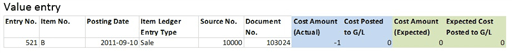
From version 5.0:
There is no longer a posting date to be stated in the request form of the Post Inventory Cost to G/L batch job. The G/L entry is created with the same Posting Date as the related value entry. In order to complete the batch job the allowed posting date range must allow the Posting Date of the created G/L entry. If not, the allowed posting date range must be temporarily re-opened by changing or removing the dates in the Allow Posting From and To fields in the General Ledger Setup. To avoid reconciliation issues it is required that Posting Date of the G/L Entry corresponds to the Posting Date of the Value Entry.
The batch job scans Table 5811 - Post Value Entry to G/L, to identify the Value Entries in scope for posting to General Ledger. After successful run the table is emptied.
See Also
Design Details: Inventory Costing
Design Details: Item Application